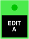
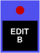

COMMON edit mode
This controls whether the parameter control is connected to an A parameter, a B parameter, or both in parallel. It has no effect if the parameter currently selected on the Chroma’s control panel isn’t one of the channelized parameters.
Toolkit
This is contained in the edit cluster within the Common section.
Chroma panel
This is set with the following switches:
|  | A | |
|  | B | |
| + | A&B |
The two switches must be pressed concurrently for A&B.
MIDI
This is accessed via NRPN 0,9.
Values
| MIDI | mode | ||
| 1 | Edit A | ||
| 2 | Edit B | ||
| 3 | Edit A&B | (default) |